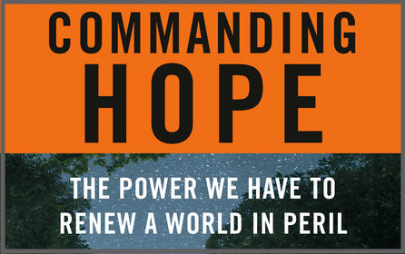
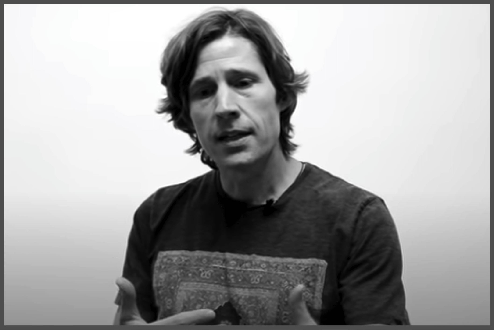
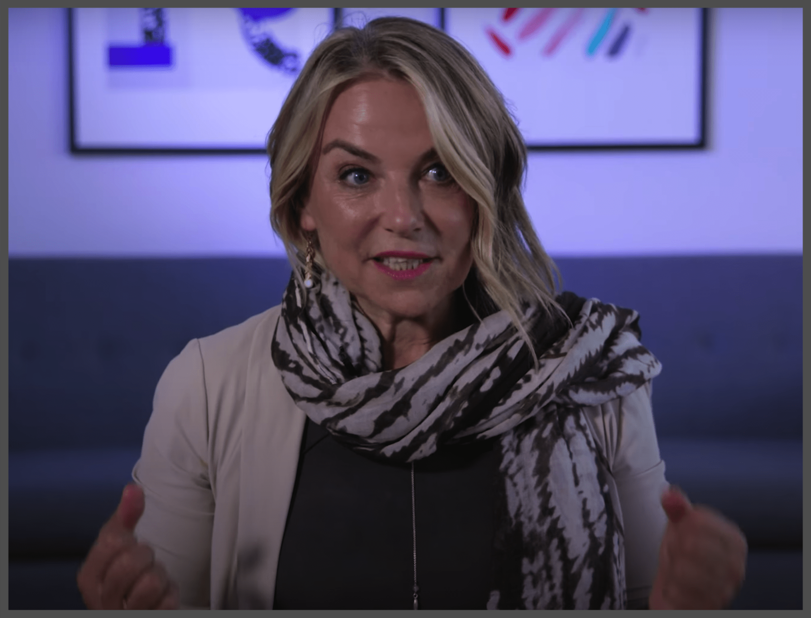
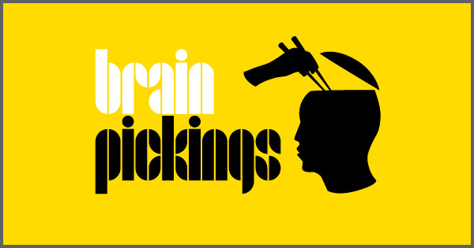
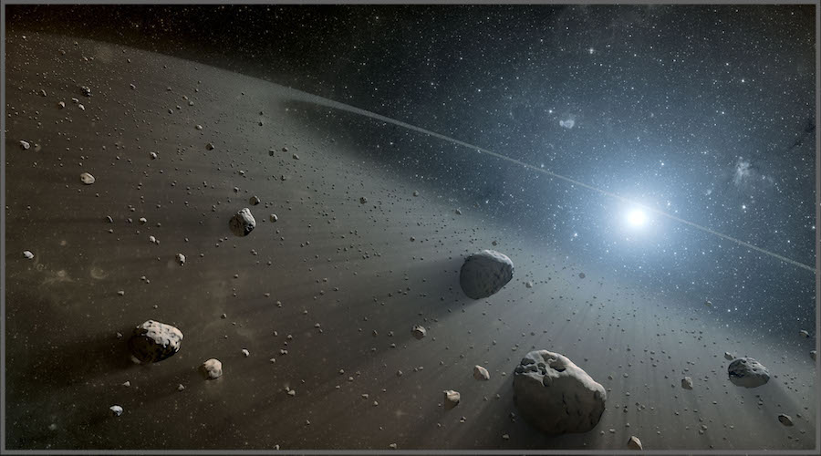
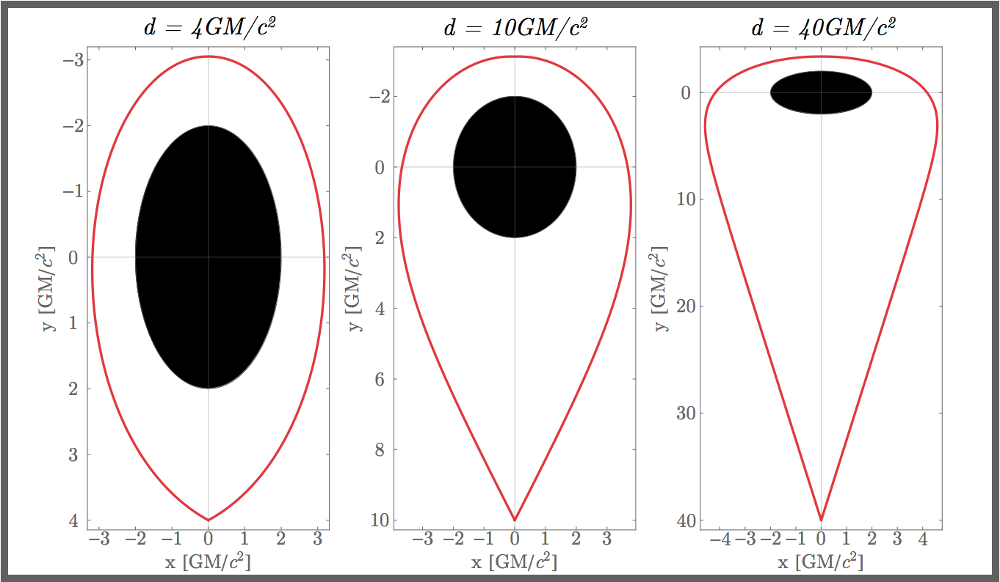
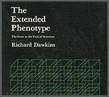
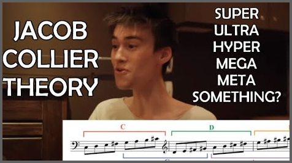

- Thomas Homer-Dixon: Commanding Hope
"First, we need individually to better understand how and why we see the world the way we do and what makes other people's views sometimes so different from ours. Second, [...] we need to actively create together from our diverse perspectives a shared story of a positive future [...]. And, finally, we need to fully mobilize our extraordinary human agency to produce that future."

- Rodney Mullen
"What we [skateboarders] learn from falling and getting up again and again - it changes you. That imbues into you, whether you know it or not - that shapes how you look at things."

- Esther Perel
"When people come into a session, they come with a story. The goal, at the end of the session, is that they have to leave with a different story." - A podcast for anyone who has ever loved.

- Brain Pickings
"Brain Pickings has a free Sunday digest of the week's most interesting and inspiring articles across art, science, philosophy, creativity, children's books, and other strands of our search for truth, beauty, and meaning."

- How much of the solar system should we leave as Wilderness?
"We make a general argument that, as a matter of fixed policy, development should be limited to one eighth, with the remainder set aside. [...] A limit of some sort is necessary because of the problems associated with exponential growth." (Elvis & Milligan, 2019)

- The Halo Drive
Fuel-free relativistic propulsion of large masses via recycled boomerang photons. "The proposed system is that a spacecraft emits a collimated beam of energy towards at a black hole [in a binary] at a carefully selected angle, such that the beam returns to the spacecraft - a so-called boomerang geodesic. [...] This energy is then transferred to the spacecraft allowing for acceleration." (Kipping, 2019)

- System Sounds
"We are a science-art outreach project that translates the rhythms and harmonies of the cosmos into music and sound. Watch our TED Talk for a quick introduction to how we listen to the sounds of the universe and check out our press coverage for more information."

- Richard Dawkins: The Extended Phenotype
"A personal look at the evolution of life, and in particular at the logic of natural selection and the level in the hierarchy of life at which natural selection can be said to act. [...] What I am advocating is a point of view, a way of looking at familiar facts and ideas, and a way of asking new questions about them." (Dawkins, 1999)

- Jacob Collier interviews on harmony
Super-Ultra-Hyper-Mega-Meta Lydian, Negative Harmony, 5th and 4th Theory, and more... [Shout-out to Jacob - if you're reading this, reach out! Let us converse.]